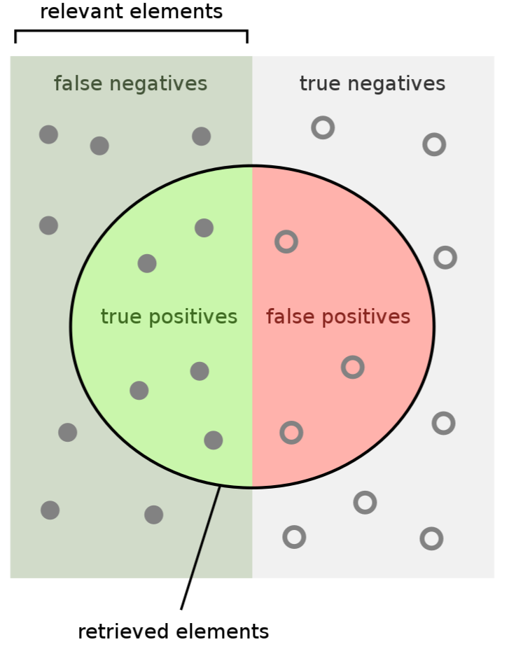

Journey
- Quality control method
- Reminder of the Long & Shi Article
- Empirical approach to estimate coefficients
- Coefficient study tools : pybsrnqc
- Different plot and displays
- QCrad
- Interactive tool to determine coefficient
- Perspectives
- Application on PAL and RUN Station
Introduction
The laboratory EnergyLab becomes BSRN station candidate in 2018.
We had to implement quality control assessment.
We decide to use Long & Shi article but some level depends of coefficients.
We hired Maelle Baronet, Ecole des Mines post-graduate Engineering School to work on the suject.
The report with full details is acceccible on BSRN Website
Quality control method
In 2008, Long & Shi define a ways to controle BSRN station. The metodology is called QCrad and implemented into the BSRN toolbox.
Long & Shi define different levels of data quality with flags.
QC flag describe the severity and direction (too low or too hight) :


19 QC Rules explained, some coefficient dependent. Example here for global :

"The question which arises now is the following : how can one determine these coefficients ? Apparently there is no precise method or approach to be followed to determine the coefficients of a given station."
Empirical approach to estimate coefficients
Which points are outliers?
Our definition :
"Outliers are by definition infrequent observations, i.e. points that do not follow the characteristic distribution of the rest of the data"
Some statistic methods to find outliers
Inter quartile range (IQR)
Z-Score
Isolation forest
Kernel Density Estimation (KDE)
let $(x_1, ..., x_n)$ independent and identically distributed and $h>0$ a smoothing parameter. The KDE is
$$ \hat{f}_{h}(x) = \frac{1}{nh} \sum_{i=1}^{n} K(\frac{x - x_i}{h}) $$ with a gaussian kernel $ K(x) = \frac{1}{\sqrt{2 \pi}} e^{- \frac{1}{2} x^2} $The more neighbors a point has in its surroundings, the higher its density value.

Here, KDE on a two year datastet for Global.
If we choose a KDE threshold, and fix a coefficient, we can define the accuracy score of the QC Rule respecting the KDE threshold as
- Counting the outliers detected by the curve
- Comparing to outliers identified by the KDE
\[Accuracy = \frac{Correct\ Predictions}{All\ Predictions}\]
\[Accuracy = \frac{TP + TN}{TP + TN + FP + FN}\]
BUT : it will not work because we want to eliminate a few points over a large amount.
Accuracy will grow with TN
So we define :
$Precision = \frac{TP}{TP + FP}$, tends toward 1 when no FP
$ Recall = \frac{TP}{TP + FN}$, tends toward 1 when no FN

$$F1 = 2 \times \frac{Precision \times Recall}{Precision + Recall} $$
with a fix threshold, we keep the QC rules coefficients with the highest F1-score.
Method summary
- Choice of the QC and the level studied
- Computation on the Gaussian KDE on the dataset
- Choice of the density threshold for outliers
- Test of a range of coeffs and calculation of F1 score
- Selection of the best coefficient
Advantages / Limitations :
- (+) Easy to compute
- (+) Usable on other stations
- (-) Empirical aspect on the choice of the threshold
The pybsrnqc library
This module allows you to study the data and the limits given by the coefficients thanks to visualization and calculation tools.
Installation
// using pip
pip install pybsrnqc
It operates on a repository containing monthly csv datafiles :
| timestamp | global2_avg | direct_avg | diffuse_avg | downward_avg | temperature |
|---|---|---|---|---|---|
| 2019-08-01 00:00:00 | 145.1 | 665.300 | 69.340 | 365.65 | 25 |
| [...] | [...] | [...] | [...] | [...] | [...] |
| 2019-08-31 23:59:00 | 145.1 | 665.300 | 69.340 | 365.65 | 25 |
Python imports
from pybsrnqc import plot_limits as pl
from pybsrnqc import open_data as od
from pybsrnqc import qc_functions as qcf
from pybsrnqc import coef_study as cs
from pybsrnqc.config import Coef, Station
You can define the location of your station,
# Coefficients values and station location
station = Station()
station.LAT = 48.711951760391926
station.LON = 2.207638279957924
station.ALT = 159.0
station.TZ = "Europe/Paris"
and import your data.
# Get data
path = './dataset/'
df = od.open_all(path,period=['202105','202108'], station=station)
Function compute the SZA. Result into a dataframe (df).
And then plot standard limits on the loaded dataset
# Plotting data and BSRN limits
coefs = Coef()
pl.limit_plot(df, qcf.QC1(), coefs)
pl.limit_plot(df, qcf.QC2(), coefs)

Compute the KDE for DF and choose a threshold
# Calculating kernel density for the dataset
log_kernel = pl.kde_computing(df, qcf.QC1())

You can even look at series over KDE
# Plotting time series on a specific date
pl.plot_series_kde(df, log_kernel, qcf.QC1(), begin='2021-07-03', end='2021-07-04')
pl.plot_series_kde(df, log_kernel, qcf.QC1(), begin='2021-07-22', end='2021-07-24')

Helpers to decide which threshold
# Observing the effect of the coefficient value over certain indicators
df_var = cs.coef_variation(df, log_kernel, qcf.QC1())

And then, you can finally compute the best coefficient respecting threshold
# Finding the best coefficient for a density threshold given
df_score, score = cs.calc_coef(df, log_kernel, qcf.QC1(), threshold=-14, level='level_2')
Upper limit
D1 accuracy_score precision_score recall_score f1_score
104 1.04 0.999722 0.545455 0.666667 0.6
An automatic way exist
from pybsrnqc import coef_calculator as cc
name_coef, coef = cc.compute('./dataset')
Application on PAL and RUN Station
Let compare KDE for both site
KDE QC1 : RUN (left) vs PAL (right)


KDE QC2 : RUN (left) vs PAL (right)
KDE QC3 : RUN (left) vs PAL (right)

KDE QC5 : RUN (left) vs PAL (right)
KDE QC10 : RUN (left) vs PAL (right)
Studie of QC2 for PAL
Lets plot classical limit for continetal data
Some stats to estimate threshold
What ?!
So it seems methods has quite of limitation but it help us to find set of cefficients for RUN :
| QC Rule | 1st level | 2nd level |
|---|---|---|
| QC1 | $C_1 = 0.96$ | $D_1 = 1.09$ |
| QC2 | $C_2 = 0.52$ | $D_2 = 0.60$ |
| QC3 | $C_3 = 0.76$ | $D_3 = 0.80$ |
| QC5 min | $C_5 = 315$ | $D_5 = 308$ |
| QC5 max | $C_6 = 450$ | $D_6 = 457$ |
| QC10 min | $C_{11} = 0.73$ | $D_{11} = 0.70$ |
| QC10 max | $C_{12} = 0.20$ | $D_{12} = 3.30$ |
Eventually, the whole purpose of the method was to study our dataset and quality of our data.
Said otherwise, the journey was more important than the tools we created
Conclusion
- Implementation of a method to find the user-configurable coeffs
- Methods based on statistical definition of outliers
- Python tools downloadable on pypi
- Not all QC implemented in the studies. But all QCRad acceccible
- Methods have some limits :
- Arbitrary choice of threshold
- Need to clean data as for PAL station
- Self imposed contingent constrain using Long & Shi Rules
- The project remain in development
"Apparently there is no precise method or approach to be followed to determine the coefficients of a given station."